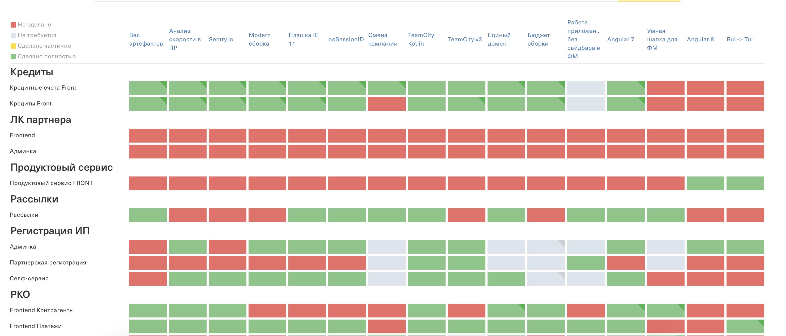

Платформенная команда
инструкция по применению

О чем поговорим
- Как понять, что вам нужна платформенная команда
- Что входит в задачи платформенной команды
- Как эффективно делать задачи в платформенной команде
- Какие задачи нужно делегировать в продуктовые команды и как доводить их до конца
- Дальнейшее развитие и декомпозиция платформенной команды
Как понять, что вам нужна платформенная команда?
Посчитайте количество "да" на вопросы:
- Нет времени на research?
- Бэклог тех. задач не разгребается?
- Нет времени делиться кодом и практиками с другими командами?
- Большие расхождения в инструментах с другими командами?
- Нет времени/сил писать документацию?
- Некогда следить за тем, что делают в других командах?
- Нет времени/сил писать документацию?
- Нет времени рефакторить легаси?
> 4
Вам нужна платформенная команда
Что входит в задачи платформенной команды?
👁️ Всё
за пределами фокуса продуктовых команд
💅
🔎 Ресерч
— источник бэклога платформенной команды
📢 Делиться знаниями
— нельзя становиться узким горлышком
💪 Брать ответственность
— за сервисы и компоненты без мейнтейнера
Как эффективно делать задачи в платформенной команде
- Research
- Архитектура
- Имплементация
- Документация
- Внедрение в 1 продукт
- Масштабирование
📁 Документация важна
— если не хотите по 1000 раз рассказывать одно и то же
🔥 Обратная связь
— через один канал (например: slack)
Способы распространения сервисов и компонент
NPM пакет
— подходит для фиксированных сервисов
(пример кода)
Ссылка на js-скрипт
— подходит для динамичных сервисов
(пример кода)
Какие задачи нужно делегировать в продуктовые команды и как доводить их до конца
Сам не знаю
(шучу (наверное))
Любые задачи, которые готовы взять
— не отказывайтесь от помощи продуктовых команд
— не жадничайте отдавать "вкусные" задачи
Заведение тикетов на команды
— от задачи сложно отказаться
Матрица внедрения фич

Дальнейшее развитие платформенной команды
Сore команда
— одна из первых ступеней эволюции